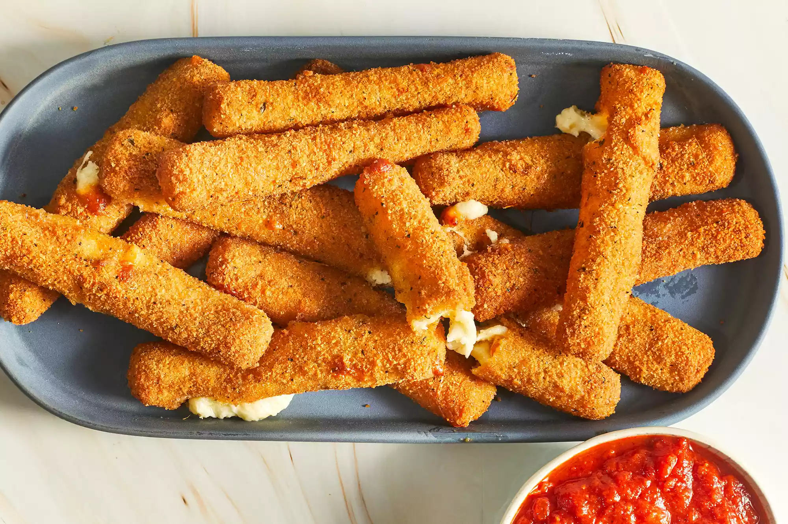

Mozzarella Stick Recipe

Description
Mozzarella sticks are very easy to make at home. They're deep-fried until golden and crispy on the outside, with melted gooey cheese on the inside. They're so good and take just minutes to fry! Try dipping them in a marinara sauce!
Did you know you don't have to go out to enjoy restaurant-worthy mozzarella sticks? Well, you don't! With this top-rated recipe, you can make irresistible fried mozzarella cheese sticks in the comfort of your own home.
Ingredients
- 2 large eggs, beaten
- ¼ cup water
- 1 ½ cups Italian seasoned bread crumbs
- ½ teaspoon garlic salt
- ⅔ cup all-purpose flour
- ⅓ cup cornstarch
- 2 cups oil for frying, or as needed
- 1 (16 ounce) package mozzarella cheese sticks
Steps
- Whisk water and eggs together in a small bowl. Mix bread crumbs and garlic salt together in a medium bowl. Blend flour and cornstarch together in a third bowl.
- Heat oil to 365 degrees F (185 degrees C) in a large, heavy saucepan.
- Dredge a mozzarella stick in flour; shake off excess. Dip into egg mixture. Lift up so excess egg drips back in the bowl. Press into bread crumbs to coat. Place breaded mozzarella stick on a plate or wire rack. Repeat with remaining mozzarella sticks.
- Use a spider spoon or a pair of tongs to lower 3 to 4 mozzarella sticks into the hot oil. Fry until golden brown, about 30 seconds. Remove from heat and drain on paper towels. Repeat to fry remaining mozzarella sticks.